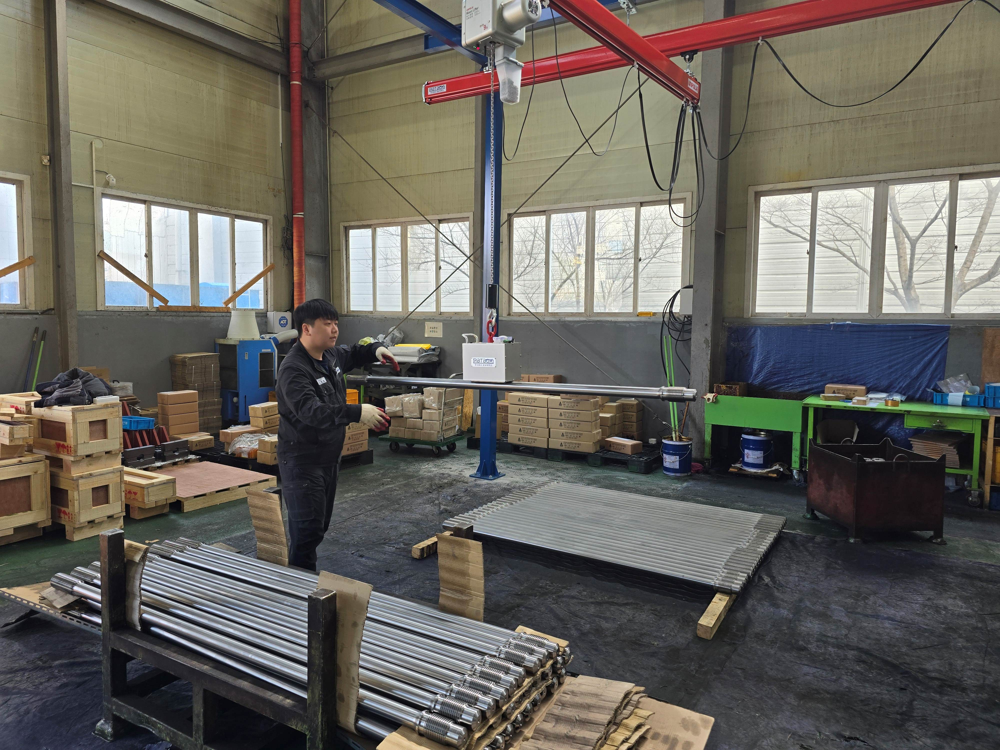
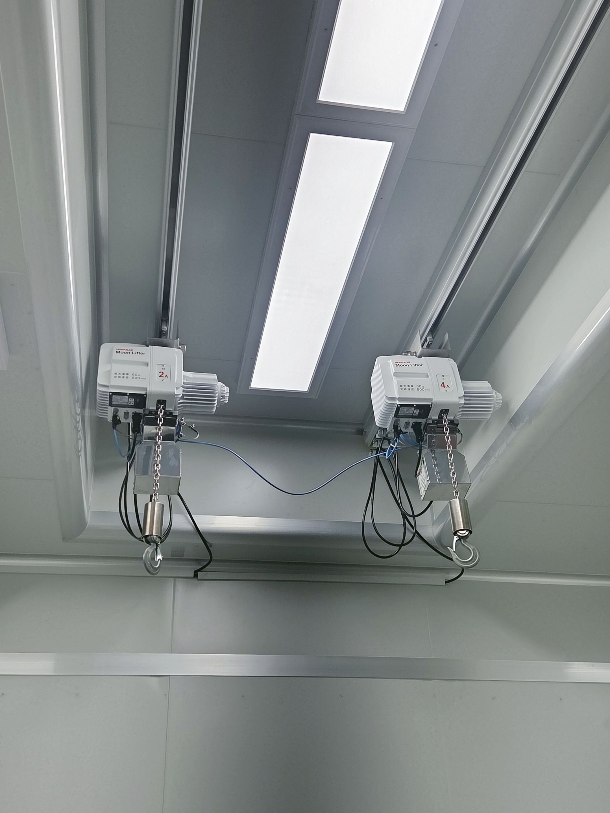
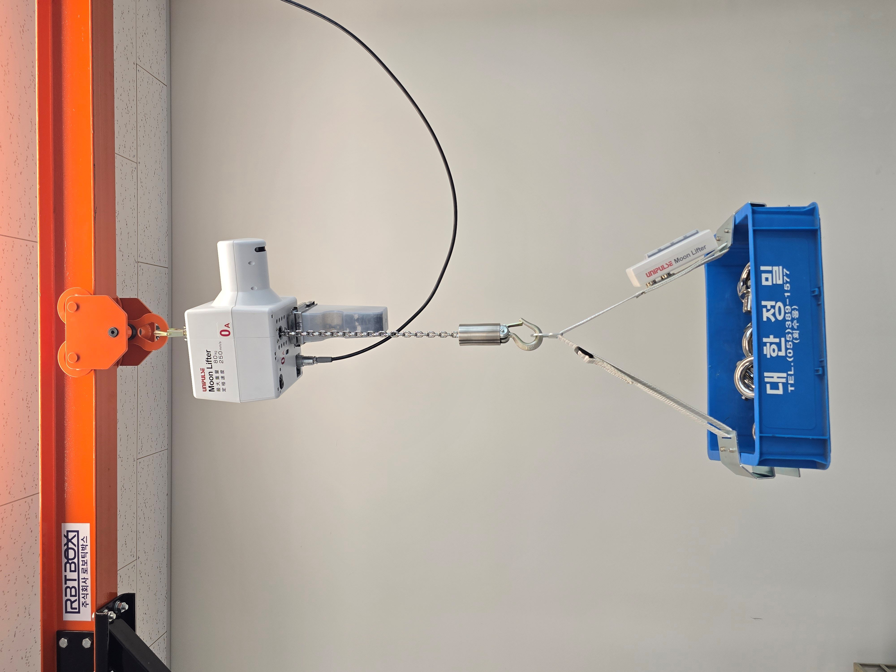
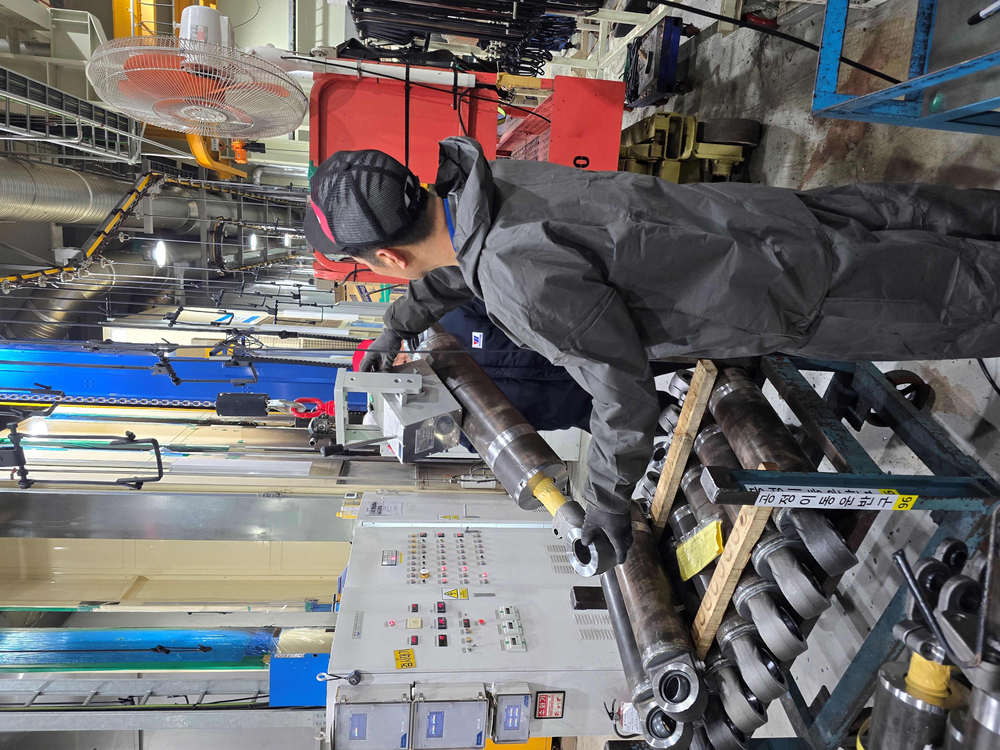
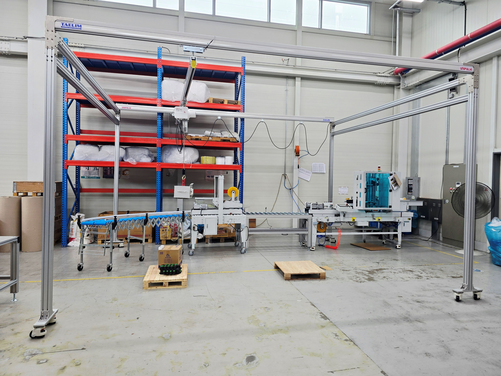
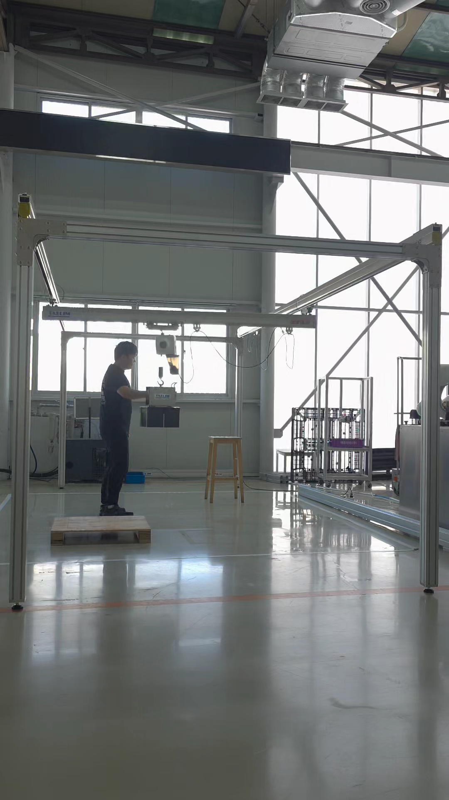
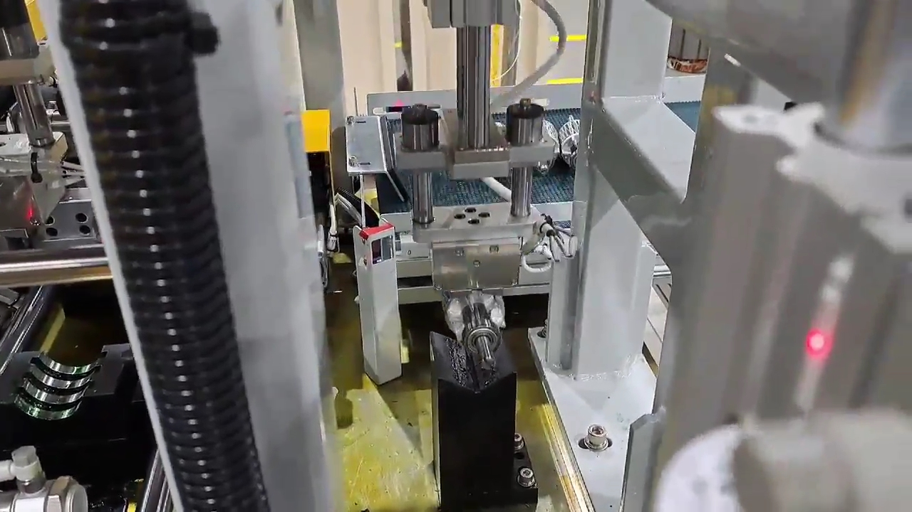
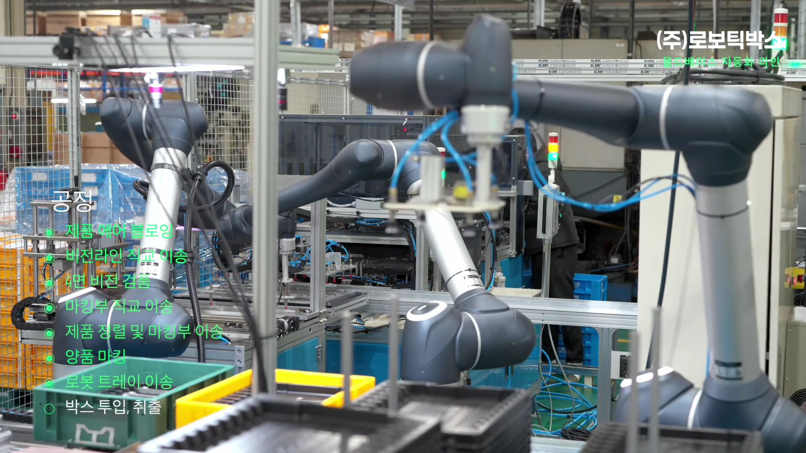
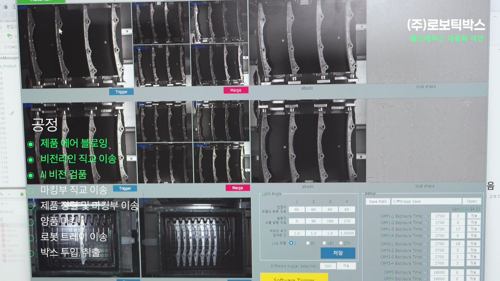

유압실린더 제조 공정
PROCESS TRANSFER AUTOMATION DETAIL
로보틱박스(ROBOTICBOX)는 중량물 이송, 작업자 보조형 이송, 전동밸런서, Robot · AI Vision, 특수 Jig 공정을 실제 적용 가능성 기준으로 정리했습니다. 구조 가이드와 적용 공정 사례를 먼저 확인한 뒤, 필요한 자료와 문의로 이어질 수 있습니다.


장비보다 먼저 공정 경계와 작업자 개입 정도를 판단합니다.
표준형 조합 위에 지그, 레일, 안전 옵션을 더하는 구조입니다.
실제 대응해온 공정 유형을 기준으로 적용 가능 범위를 빠르게 좁힙니다.
Structure & Jig Guide
특정 장비 하나만으로 끝나는 프로젝트는 많지 않습니다.
ROBOTICBOX는 작업자 보조형 이송, 팔레트 간 이동, 반복 투입·취출, 반전 동작, 유체 취급, 천장형 구조까지 공정 조건에 맞는 Jig(Gripper)와 Rail / KBK 구조를 함께 설계해 실제 사용 가능한 형태로 제안합니다.
Jig는 작업물을 직접 잡는 주먹 역할의 기구물입니다. Magnetic Lift는 철계 중량물에 적용되는 Jig 유형 중 하나이며, 공정 조건에 따라 클램프형, 진공형, 반전형, 맞춤형 Jig로 확장할 수 있습니다.
사람이 계속 개입해야 하는 공정에는 작업자 보조형 이송 장치와 대상물 조건에 맞는 Jig(Gripper)를 결합해 중량물 취급 부담을 줄입니다.

철계 중량물을 반복 이동시키는 공정은 KBK나 경량 레일 구조를 결합해 작업 동선을 정리합니다.

반전 각도와 진입 경로가 까다로운 공정은 천장형 레일과 맞춤형 반전 지그를 함께 검토합니다.

Jig는 작업물을 파지·흡착·클램핑하는 그리퍼 역할의 기구물입니다. 철계 중량물은 Magnetic Type Jig로, 비자성체·박스·표면 민감 제품은 Clamp Type, Vacuum Type, Custom Type Jig로 검토합니다. 180도 반전, 반복 투입, 유체 취급, 자세 유지, 정밀 안착 등 공정 특이점이 있는 경우에는 별도 구조 옵션을 함께 설계합니다.
ROBOTICBOX는 공정 적용 관점으로 구조를 재해석해 제안드리고, 기본 제품 정보와 지브·설치 타입은 UNIPULSE 본사 Moon Lifter 페이지를 함께 참고하실 수 있도록 연결해 두었습니다.
Applied Fields & Processes
업종은 달라도 현장의 이송 문제는 비슷한 구조를 가집니다. ROBOTICBOX는 대상물, 작업자 개입 정도, 이송 거리, 설치 공간을 기준으로 공정을 분류하고 유사 조건의 표준 패키지로 빠르게 검토합니다.
사람이 계속 개입해야 하는 중량물 취급 공정, 팔레트 간 이동, 반복 투입·취출, 반전·천장형 구조 공정을 중심으로 대응합니다. 철계 중량물은 Magnetic Type Jig를 우선 검토하고, 형상·재질·표면 조건과 공정 특이점에 따라 Clamp Type, Vacuum Type, Custom Type Jig로 확장합니다. Moon Lifter는 작업자 보조형 이송 구간에 적용 가능한 주요 장치 중 하나입니다.
작업자 보조형 이송 장치와 대상물 조건에 맞는 Jig(Gripper)를 적용해 중량물 취급 부담과 공정 간 단절을 함께 줄인 사례입니다. 철계 부품의 경우 Magnetic Type Jig를 우선 검토할 수 있습니다.

완제품을 포장 설비 구간으로 부드럽게 연결하기 위해 작업자 보조형 이송 장치, Jig(Gripper), Rail 시스템을 결합한 사례입니다. 제품 내부 유체, 무게중심, 기울기 제한 등 공정 특이점이 있는 경우 별도 옵션으로 검토합니다.

철계 중량물을 반복 취급하는 공정에서 Magnetic Type Jig와 Rail / KBK 구조를 조합해 이송 흐름을 단순화한 사례입니다.
반전 각도와 진입 구조가 까다로운 공정에서 맞춤형 Jig(Gripper), 반전 구조, 천장형 Rail 구조를 함께 설계한 사례입니다.
반복 취급과 안전성이 중요한 공정에서 작업자 보조형 이송 장치와 Jig(Gripper)를 결합해 작업자 부담을 줄인 사례입니다. 내용물 유무, 충격 민감도, 이송 자세 제한 등 특수 조건을 함께 검토합니다.

반복성과 정형도가 높은 가공·검사·조립·적재 공정은 Robot, AI Vision, 전용 Gripper 조합으로 자동화합니다. 철계 부품은 Magnetic Type Gripper를 적용할 수 있고, 제품 형상과 표면 조건에 따라 Clamp Type, Vacuum Type, Custom Type Gripper로 확장할 수 있습니다.
반복성과 정형도가 높은 가공 공정은 로봇 자동화와 AI Vision 연계 구조로 확장하기 좋은 대표 유형입니다.

조립과 이송이 반복되는 라인형 공정에서 공정 흐름을 단순화하고 필요한 그리퍼 구성을 정리하는 유형입니다.

일정 리듬으로 반복되는 검사·적재·분류 공정은 로봇과 AI Vision을 결합해 생산성과 일관성을 높이기 좋은 대표 유형입니다. 제품 위치 확인, 양불 판정, 적재 패턴 제어까지 라인 조건에 맞춰 연계할 수 있습니다.

이송 자동화와 함께 작업자 동선, 위험 구역, 공정 상태를 함께 모니터링해야 하는 구간에서 적용 가능성을 검토합니다. 작업자 접근, 장비 동작 구간, 위험 영역 침범 여부를 AI Vision 기반으로 감지해 안전성과 운영성을 함께 높일 수 있습니다.

분야가 달라도 대상물 형상, 작업자 개입 정도, 기존 설비와의 호환성 조건이 유사하면 비슷한 구조로 빠르게 검토할 수 있습니다.
Representative Media
실제 납품 현장과 대표 영상을 통해, 작업자 보조형 이송과 구조 설계가 어떤 톤으로 구현되는지 확인하실 수 있습니다.
Core Tools
모든 프로젝트가 같은 장비로 끝나지는 않지만, 실제 납품 공정에서는 아래 구성 요소가 반복적으로 활용됩니다. ROBOTICBOX는 이 요소들을 공정 조건에 맞게 조합해 실제 운영 가능한 이송 구조를 설계합니다.
작업물을 직접 파지·흡착·클램핑하는 주먹 역할의 기구물입니다. 대상물 조건에 따라 Magnetic Type, Clamp Type, Vacuum Type, Custom Type으로 구성합니다.
작업자 인접 공정에서 중량물 이송을 보조하는 장치입니다. Moon Lifter는 전동밸런서 방식의 작업자 보조형 이송 장치로, 하중 제어와 이동 보조를 통해 유연한 핸들링을 가능하게 합니다.
작업 범위와 이동 동선을 잡아주는 어깨와 몸통 역할의 구조입니다. 경량 레일, KBK, 천장형 구조를 통해 작업 흐름을 실제 현장에 맞게 풀어냅니다.
반복 공정의 자동화와 검사·적재 고도화가 필요한 구간에 선택적으로 결합합니다.
작업자와 설비가 함께 움직이는 구간에서 안전 조건, 인터락, 센서, 제어 흐름을 함께 설계합니다.
Resources
전시회, 영업 미팅, 내부 검토에 바로 활용할 수 있도록 대표 영상과 핵심 PDF 자료를 함께 정리했습니다.
 YouTube
Featured
YouTube
Featured
공정 중심 자동화 이송 솔루션의 전체 방향과 통합 SI 메시지를 확인할 수 있습니다.
 YouTube
Reference 01
YouTube
Reference 01
실제 보조이송 구조와 작업 흐름을 이해하는 데 도움이 되는 영상입니다.
 YouTube
Reference 02
YouTube
Reference 02
공정 개선 아이디어와 현장 적용 톤을 빠르게 확인할 수 있는 자료입니다.
 YouTube
Reference 03
YouTube
Reference 03
자동화 이송 솔루션의 운용 감각과 현장 분위기를 살펴볼 수 있는 참고 영상입니다.